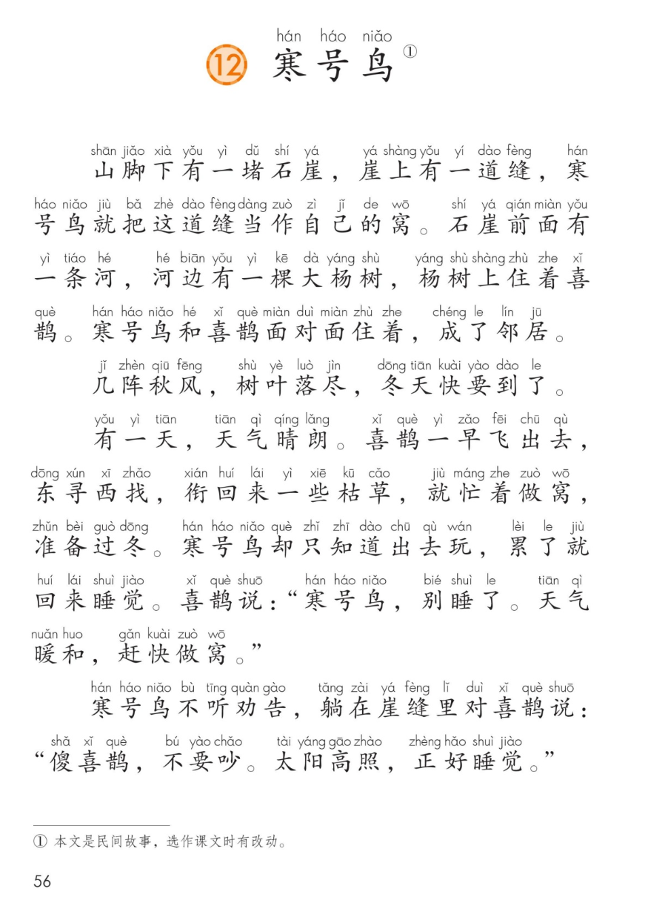
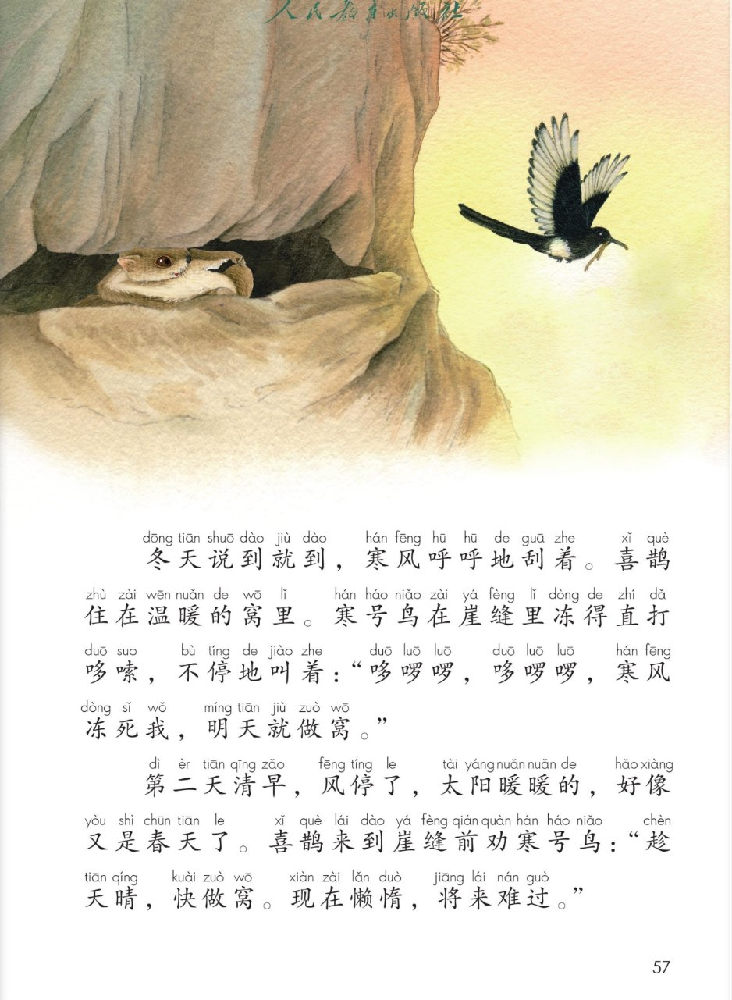
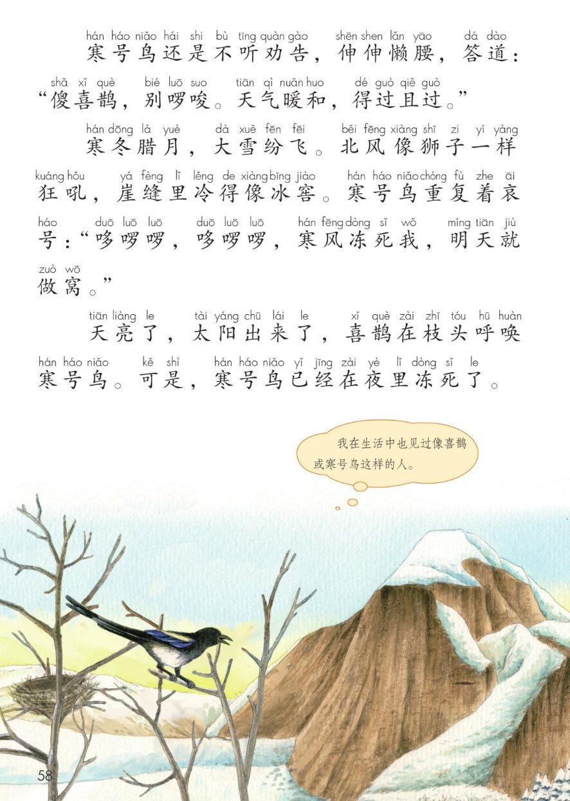
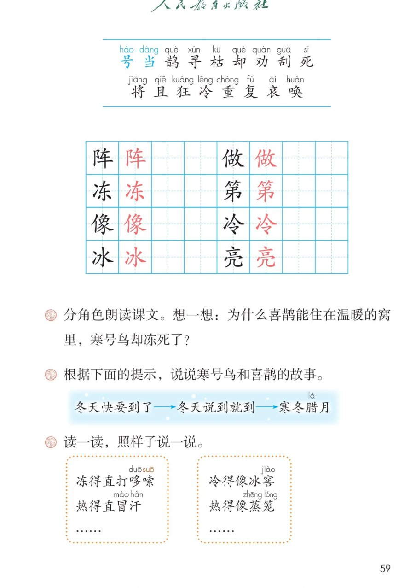

×
🔊 手机听不到声音怎么办？照这 3 步做
① 用
Edge 浏览器打开
www.jeepsh.cn（在微信里打开的点右上角「⋯ → 在浏览器打开」；没装 Edge 就到应用商店搜「Edge」安装）。
② 应用商店搜
「讯飞语记」安装 → 打开它 →
通用设置 → 语音合成设置 → 打开
「合成系统接口」和
「全局生效」两个开关 → 再选一个
中文发音人。
③ 系统语言设为
简体中文，点「
播放」试听能说中文后，
彻底关闭浏览器再重开（后台划掉），回到课件点读就有声音。
→ 打开声音自检
🐦 第 12 课《寒号鸟》· 有声图文带读
统编版语文 · 第五单元·阅读 · 课本 P56~59
课文 9 个自然段
会认字 17
会写字 8
听写词 10
近义词 4 组
深入理解 8 题
本课本领 按提示讲故事
🎧 五步学（可随时点任意一句、一个字、一个词单独听）：
① 听读课文——一句一句读，读到哪一句哪一句发光；开「跟读」后读完一句留时间让你自己读。
② 学字词——17 个会认字、8 个会写字（含书写提示），点一个读一个。
③ 词语·听写·造句——听写 10 个词（读两遍→你写→报答案→听示范句），再听 4 组近义词辨析。
④ 深入理解——8 道题（认知 / 理解 / 运用 / 拓展），开放题答案不唯一，先想后看。
⑤ 按提示讲故事·分角色——照着“冬天快要到了→冬天说到就到→寒冬腊月”讲故事，再分角色朗读。
① 听读课文（点哪一句，读哪一句）点段前的 ①②③ 听整段
注音只标本课要认、要写的字，读音来自课本第 3 页生字表
🎤 朗读要求（老师标准）
① 读准字音，不添字、不漏字、不回读；
② 逗号稍停，句号停得长一点；
③ 人物的话读出心情：喜鹊着急地劝，寒号鸟满不在乎；
④ 两次“哆啰啰”第二遍更弱、更没力气；
⑤ “得过且过”“寒冬腊月”读准、读清楚。
①山脚下有一堵石崖，崖上有一道缝，寒号鸟就把这道缝当作自己的窝。石崖前面有一条河，河边有一棵大杨树，杨树上住着喜鹊。寒号鸟和喜鹊面对面住着，成了邻居。
②几阵秋风，树叶落尽，冬天快要到了。
③有一天，天气晴朗。喜鹊一早飞出去，东寻西找，衔回来一些枯草，就忙着做窝，准备过冬。寒号鸟却只知道出去玩，累了就回来睡觉。喜鹊说：“寒号鸟，别睡了。天气暖和，赶快做窝。”
④寒号鸟不听劝告，躺在崖缝里对喜鹊说：“傻喜鹊，不要吵。太阳高照，正好睡觉。”
⑤冬天说到就到，寒风呼呼地刮着。喜鹊住在温暖的窝里。寒号鸟在崖缝里冻得直打哆嗦，不停地叫着：“哆啰啰，哆啰啰，寒风冻死我，明天就做窝。”
⑥第二天清早，风停了，太阳暖暖的，好像又是春天了。喜鹊来到崖缝前劝寒号鸟：“趁天晴，快做窝。现在懒惰，将来难过。”
⑦寒号鸟还是不听劝告，伸伸懒腰，答道：“傻喜鹊，别啰唆。天气暖和，得过且过。”
⑧寒冬腊月，大雪纷飞。北风像狮子一样狂吼，崖缝里冷得像冰窖。寒号鸟重复着哀号：“哆啰啰，哆啰啰，寒风冻死我，明天就做窝。”
⑨天亮了，太阳出来了，喜鹊在枝头呼唤寒号鸟。可是，寒号鸟已经在夜里冻死了。
🤔 想一想（点我可跳过）
课本的样子（点一张图，听读这一页）点一张图，听读整页

第 56 页 · 课文开头

第 57 页 · 崖缝里的小鸟

第 58 页 · 大雪与结尾

第 59 页 · 生字表与课后题
📖 人教版《语文》二年级上册 · 课本第 56~59 页 · 图片仅供个人学习，版权归人民教育出版社所有
② 会认字（17 个）点一个字，听读音、词语和课文里的句子
② 会写字（8 个）结构、部首、笔画与书写提示为通用规范，供参考，以教材和老师的指导为准
阵
zhèn
几阵 · 阵雨
6 画 · 左右（阝）
左耳窄，末竖长而直
冻
dòng
冻死 · 冰冻
7 画 · 左右（冫）
两点水在左，右竖钩要正
像
xiàng
好像 · 画像
13 画 · 左右（亻）
人旁要窄，右边写紧凑
冰
bīng
冰窖 · 冰块
6 画 · 左右（冫）
两点水在左，竖钩要直
做
zuò
做窝 · 做事
11 画 · 左中右（亻）
人旁窄，反文撇捺舒展
第
dì
第二天 · 第一
11 画 · 上下（竹）
竹头写扁，末撇要长
冷
lěng
寒冷 · 冷水
7 画 · 左右（冫）
两点水在左，人字舒展
亮
liàng
天亮 · 明亮
9 画 · 上下（亠）
宝盖宽，竖弯钩舒展
③ 读一读，照样子说一说（课后第 3 题）点一行，听读这一组
得冻得直打哆嗦 热得直冒汗 急得直跺脚
得冷得像冰窖 热得像蒸笼 白得像雪
词寒风呼呼 大雪纷飞 北风狂吼 得过且过
③ 听写（10 个词）读两遍 → 你在纸上写 → 报答案 → 听示范句
准备听写 · 共 10 个词
○ ○ ○
点下面的「开始听写」，听到一个词就写一个词。
③ 听写的词 · 造句示范点词听读，点句子听示范句，再自己说一句
1石崖课文词语
示范句：山脚下有一堵石崖。
✏️ 我也能说：哪里 + 有一堵怎样的石崖
2崖缝课文词语
示范句：寒号鸟住在崖缝里。
✏️ 我也能说：谁 + 住在 + 哪里
3当作课文词语
示范句：寒号鸟把这道缝当作自己的窝。
✏️ 我也能说：谁 + 把什么 + 当作什么
4邻居课文词语
示范句：寒号鸟和喜鹊成了邻居。
✏️ 我也能说：谁 + 和谁 + 是邻居
5晴朗课文词语
示范句：有一天，天气晴朗。
✏️ 我也能说：什么时候 + 天气晴朗
6枯草课文词语
示范句：喜鹊衔回来一些枯草。
✏️ 我也能说：谁 + 衔回来 + 一些什么
7劝告课文重点词
示范句：喜鹊劝寒号鸟做窝，可它不听劝告。
✏️ 我也能说：谁 + 听（不听）+ 谁的劝告
8哆嗦课文重点词
示范句：寒号鸟冻得直打哆嗦。
✏️ 我也能说：谁 + 冷得（冻得）+ 直打哆嗦
9懒惰课文重点词
示范句：现在懒惰，将来难过。
✏️ 我也能说：谁 + 很懒惰，所以 + 怎么样
10寒冬课文重点词
示范句：寒冬腊月，大雪纷飞。
✏️ 我也能说：寒冬腊月 + 天气怎么样
③ 近义词辨析（4 组）相同点 / 不一样在哪 / 各造一句
劝告 — 劝说
相同：都是让人改，都是为别人好。
不一样：劝告语气更认真、更郑重，多是提醒别人别做错事；劝说更平和，是好好地说服。
劝告：喜鹊一次次劝告寒号鸟，它都不听。
劝说：老师劝说他不要灰心。
温暖 — 暖和
相同：都是不冷，让人舒服。
不一样：温暖既可以写天气，也可以写心里；暖和更多说天气和身体的感觉，更口语。
温暖：喜鹊住在温暖的窝里。
暖和：天气暖和，赶快做窝。
懒惰 — 懒散
相同：都是不爱干活。
不一样：懒惰是说人不想做事、怕吃苦；懒散多说不守规矩、松松垮垮。
懒惰：现在懒惰，将来难过。
懒散：他做事懒散，总让人催。
呼唤 — 呼喊
相同：都是大声叫。
不一样：呼唤是叫人来、叫醒人，带着感情；呼喊多指大声喊叫，声音更大。
呼唤：喜鹊在枝头呼唤寒号鸟。
呼喊：远处传来呼喊的声音。
③ 词语拓展（说一说，记一记）
拟声词呼呼 哆啰啰 呼呼地刮 呼呼地吹
写“冷”寒冷 冰冷 冰窖 冻得直打哆嗦
东…西…东寻西找 东张西望 东奔西走
四字词语寒冬腊月 大雪纷飞 北风狂吼 得过且过
④ 深入理解（8 题 · 先想后看）标「答案不唯一」的题，说得有道理都对
认知寒号鸟和喜鹊分别住在哪里？它们是什么关系？
看解析
🤔 想一想
解析：
寒号鸟：住在山脚下石崖的崖缝里，把这道缝当作自己的窝。
喜鹊：住在石崖前面、河边的大杨树上。
它们面对面住着，成了邻居。
💡 读课文开头先找“谁住在哪儿”，后面的事才好懂
认知秋天的时候，喜鹊忙着做什么？寒号鸟在做什么？
看解析
🤔 想一想
解析：
喜鹊：一早飞出去，东寻西找，衔回来枯草，忙着做窝，准备过冬。
寒号鸟：只知道出去玩，累了就回来睡觉。
💡 一个在动手，一个在睡觉——这一对比，后面的结果就不奇怪了
理解喜鹊劝了寒号鸟几次？每次寒号鸟是怎么回答的？
看解析
🤔 想一想
解析：
第一次（秋天）：喜鹊说别睡了，天气暖和，赶快做窝。寒号鸟回答：傻喜鹊，不要吵，太阳高照，正好睡觉。
第二次（第二天清早）：喜鹊说趁天晴快做窝，现在懒惰将来难过。寒号鸟伸伸懒腰说：傻喜鹊，别啰唆，天气暖和，得过且过。
💡 两次都写“不听劝告”，第二次还加了“还是”，说明它一点没改
理解为什么喜鹊能住在温暖的窝里，寒号鸟却冻死了？
看解析
🤔 想一想
解析：
喜鹊：天还暖和的时候就动手，东寻西找衔枯草，把窝做好，冬天来了有温暖的家。
寒号鸟：天天说“明天就做窝”，可到了明天又说“得过且过”，一天推一天，窝一直没做。
根本原因：喜鹊说到做到，寒号鸟光说不动。
💡 今天能做的事，不要留给明天
理解“得过且过”是什么意思？寒号鸟为什么总说明天就做窝？
看解析
🤔 想一想
解析：
得过且过：日子能过得去就行，不想以后，也不愿动手。
总说明天：它觉得今天还不算太冷、还能凑合，做窝又累又麻烦，就一天天往后推。
🌈 “明天”听起来很近，可它一直没来
运用按“冬天快要到了 → 冬天说到就到 → 寒冬腊月”的提示，说说寒号鸟和喜鹊的故事。
看解析
🤔 想一想
解析（说出一点就很好）：
冬天快要到了：喜鹊东寻西找衔枯草做窝；寒号鸟只出去玩，累了就睡，还嫌喜鹊吵。
冬天说到就到：寒风呼呼地刮。喜鹊住进温暖的窝；寒号鸟在崖缝里冻得直打哆嗦，叫着明天就做窝。
寒冬腊月：大雪纷飞，北风狂吼，崖缝里冷得像冰窖。寒号鸟还在哀号，第二天早上，它已经冻死了。
💡 三段话按顺序说，每段说清“谁在做什么”，故事就连起来了
🌈 答案不唯一，顺序对、话说通顺就很好
运用照样子说一说：冻得直打哆嗦／热得直冒汗；冷得像冰窖／热得像蒸笼。
看解析
🤔 想一想
解析：
…得直…：急得直跺脚 乐得直拍手 吓得直发抖 累得直喘气
…得像…：白得像雪 红得像苹果 快得像风 热得像蒸笼
💡 前面说“得”后面的样子，越具体越像真的
🌈 答案不唯一，说得像、说得通就好
拓展你在生活中见过像喜鹊或像寒号鸟这样的人吗？你想对他们说什么？
看解析
🤔 想一想
参考答案（三种思路，任选一种）：
像喜鹊的人：作业早早写完、书包提前收好的同学。想说：你真会安排，我要向你学。
像寒号鸟的人：总说“明天再写”“等会儿再收拾”的人。想说：今天就做吧，明天还有明天的事。
说自己：我也拖过作业，以后先做要紧的事，再玩。
🌈 答案不唯一，说清“像谁 + 想说什么”就是完整的一段话
⑤ 按提示讲故事（课后第 2 题：根据下面的提示，说说寒号鸟和喜鹊的故事）
💬 讲故事支架：先说它们住在哪儿 → 再说秋天喜鹊做窝、寒号鸟不做 → 接着说冬天到了，寒号鸟冻得直哆嗦，还说明天做窝 → 最后说寒冬腊月，它冻死了。
⑤ 分角色朗读（课后第 1 题：分角色朗读，想一想为什么喜鹊能住在温暖的窝里，寒号鸟却冻死了）点一个角色，听他（她）说的话
🐦 喜鹊
“寒号鸟，别睡了。天气暖和，赶快做窝。”
“趁天晴，快做窝。现在懒惰，将来难过。”
💬 要读出着急、真心为它好的语气，第二次更认真
🐭 寒号鸟（说话）
“傻喜鹊，不要吵。太阳高照，正好睡觉。”
“傻喜鹊，别啰唆。天气暖和，得过且过。”
💬 要读出满不在乎、懒洋洋的语气，可以伸个懒腰
🥶 寒号鸟（哀号）
（冻得直打哆嗦地叫）“哆啰啰，哆啰啰，寒风冻死我，明天就做窝。”
（第二遍，声音更弱）“哆啰啰……明天就做窝……”
💬 要读出发抖、越来越没力气的声音，第二遍更弱
📖 旁白·秋天
“山脚下有一堵石崖，崖上有一道缝，寒号鸟就把这道缝当作自己的窝。……寒号鸟却只知道出去玩，累了就回来睡觉。”
💬 要读得清楚、平稳，像在讲故事
⛄ 旁白·冬天
“冬天说到就到，寒风呼呼地刮着。喜鹊住在温暖的窝里。……可是，寒号鸟已经在夜里冻死了。”
💬 要读得越来越冷、越来越慢，最后一句读出难过